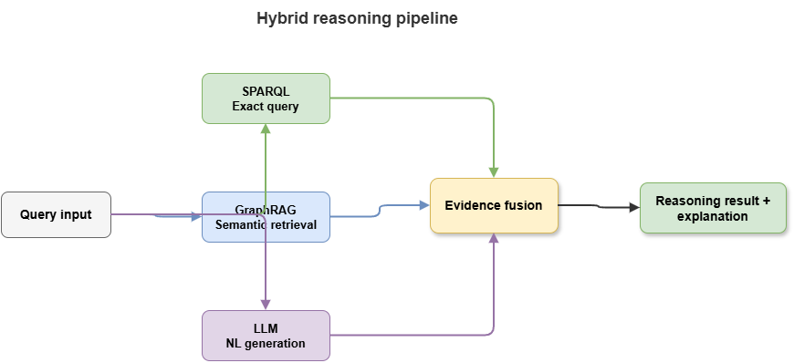
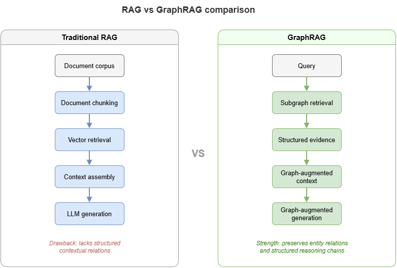
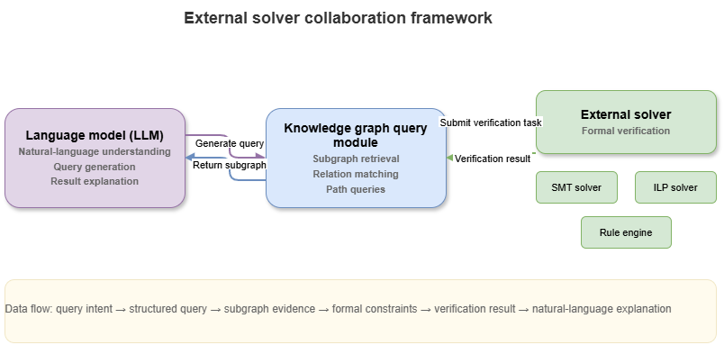

After knowledge injection, constrained learning, and co-training, this chapter turns to one of the most deployable neuro-symbolic paths: knowledge-graph-driven hybrid neuro-symbolic reasoning. “Hybrid” here is not mere module chaining; a single workflow orchestrates structured knowledge, deterministic queries, language-model generation, and external solvers so the system can run verifiable rule reasoning while leveraging LLMs for natural language, semantic completion, and explanation—balancing accuracy, explainability, and engineering viability.
The pattern matters acutely in safety-critical domains. Pure rule systems are controllable but weak on open-text understanding, semantic glue, context integration, and natural explanation; pure LLMs are fluent but prone to hallucination, rule drift, missing citations, and unclear accountability. KG-driven hybrid reasoning bridges them: the KG supplies facts, relation networks, and rule anchors; SPARQL (and kin) yields deterministic evidence retrieval; LLMs organize semantics and explanations under constraints; retrieval augmentation and external solvers keep answers knowledge-bound, traceable, and auditable.
We proceed as follows: SPARQL as deterministic evidence extraction; LLMs for constrained semantic completion and chained explanations; RAG’s fit and limits in rule-heavy settings; GraphRAG’s shift from documents to graphs and semantic subgraphs; synergy between external solvers and LLMs; and the capability step from “answering” to answering with explicit grounds. Structurally, this chapter is the hub of the static-cognition part—not generic “knowledge-augmented QA,” but rule-dense, knowledge-rich, highly explainable settings where KG, query languages, LLMs, solvers, and explanation mechanisms form a controllable static neuro-symbolic stack—theory for SkyKG-style methods and essential background on neuro-symbolic RAG, GraphRAG, and safety-critical explanatory systems.
9.1 SPARQL queries and deterministic evidence extraction#
KGs matter in neuro-symbolic AI partly because they store entities, relations, attributes, and events, and partly because standard query languages provide deterministic evidence extraction. SPARQL is central: beyond “fetching graph data,” it offers formal, verifiable, repeatable knowledge access—pulling structured evidence before language generation, with clear semantic boundaries and provenance.
SPARQL is graph-pattern matching over RDF triples. Compared with relational SQL it foregrounds semantic paths and structural motifs; compared with NL retrieval it foregrounds exact constraints and formal semantics—ideal for a deterministic evidence extractor role.
In low-altitude traffic, judgments such as entering restricted airspace, high-priority mission status, or path intersection with no-fly zones should not rest first on fuzzy LLM inference; they should be grounded in graph queries returning explicit facts—aircraft state, mission, airspace relations, rule objects.
Hybrid value one: evidence determinism. LLM outputs are stochastic and generative; SPARQL returns entities, relations, and values satisfying patterns and filters—linking conclusions to concrete graph facts, paths, and match conditions.
Value two: conditional, compositional retrieval. Risk often depends on conjunctions of aircraft type, mission priority, airspace limits, weather, and time windows. SPARQL binds variables under multi-pattern joins—ideal preprocessing before higher-level reasoning or explanation.
Value three: auditability and reproducibility. Same graph state, same query, same (intended) results—queries are inspectable artifacts unlike implicit parametric “memory” in LLMs.
Limits: SPARQL excels at explicitly modeled structure, not ellipsis, paraphrase, implicit commonsense, or rich NL context. Extraction quality tracks KG coverage, encoding of rules, and freshness. Best role: not “answer everything alone,” but supply high-trust structural skeleton evidence for later semantic integration.
Design pattern: SPARQL early—lock entities, relations, rules, and state—then pass evidence packs to LLMs or other modules so answers are anchored, not free-form generation alone. SPARQL is thus deterministic evidence anchoring before generation—without it, “knowledge-driven” reasoning risks becoming “knowledge garnish”; with it, the KG enters the reasoning core.
9.2 LLM semantic completion and chained explanation generation#
If SPARQL extracts deterministic evidence, LLMs organize it: semantic completion, contextual stitching, and natural-language chained explanations. KGs and queries handle explicit relations and constraints; they rarely deliver operator-grade prose or unstated but routine connective tissue. LLMs bridge structured facts and human-readable narrative under explicit evidence constraints.
Semantic completion here is not free hallucination but, under evidence:
Surface completion: Turn triples, attribute hits, and rule firings into readable sentences (e.g., from
UAV-17 locatedIn Corridor-A,Corridor-A hasRestriction TemporaryControl,Mission-3 hasPriority Highto a single operational summary).Discourse glue: Order evidence causally or by inference depth—not a flat list.
Bounded padding: Add connective wording and context without contradicting evidence.
Static risk settings often require not only labels or scores but why—which rules fired, which facts support the judgment. The LLM is not doing standalone proof but translating structured outcomes into human chains.
Chained explanation means presenting intermediate evidence, rule matches, and conclusion progression—e.g., state facts, matched constraints, then risk label—so users see how the result arose, not only what it is.
Benefits: usability (dense logic → fluent text) and interactivity (follow-up whys and what-ifs) when evidence-backed.
Risks: fluency bias can invent links when evidence is thin—turning “how to say it clearly” into “inventing logic the system never had.” In rule-heavy settings, spurious commonsense can masquerade as official grounds.
Best role: not independent reasoning core but evidence-constrained semantic organizer and explainer—prompt templates, slot filling, structured inputs, rule tags, citation-style formats so generation orbits retrieved facts and does not replace the rule engine on critical judgments.
Engineering pattern: structured evidence packets (nodes, paths, attributes, rule hits, metadata) → LLM instructed to explain only from supplied items, optionally citing item IDs—controlled, anchored NL rather than black-box storytelling.
LLMs thus augment human communication around explicit knowledge; they do not replace structured knowledge. Under that contract they strengthen neuro-symbolic stacks instead of eroding trust.
9.3 RAG in rule-dense settings: fit and limits#
Retrieval-augmented generation (RAG) retrieves external content before generation so answers lean on corpora rather than parametric memory alone—strong for factuality, freshness, and scale in many NLP tasks. In rule-dense, safety-sensitive, structure-led settings, vanilla document RAG needs careful scoping.
Strengths: pulls current regulations, manuals, and bulletins into context; reduces pure parametric guessing; fits sources that start as NL documents before full KG formalization—useful when knowledge engineering is incomplete.
Limits for decisive rule evidence:
Retrieval optimizes similarity, not sufficiency for rule verdicts. Relevant-looking chunks may lack governing clauses; decisive constraints may be lexically distant.
Retrieved text is not explicit logical state—premises, exceptions, and conflicts are not machine-checkable without further structure.
Evidence boundaries blur: what is binding rule vs. background vs. model paraphrase? Whole-context stuffing helps richness but hurts audit clarity.
Granularity mismatch: long passages vs. single decisive conditions or exceptions.
Appropriate RAG roles: transitional coverage when structure is partial; supplemental narrative and cases alongside KG/rule cores. Using vanilla doc RAG as the sole rule engine risks structural imprecision, weak faithfulness, and unclear accountability—motivating GraphRAG: retrieve graphs and semantic subgraphs, not only similar text.
9.4 GraphRAG: from document retrieval to graph retrieval#
When doc RAG shows structural weakness, opaque boundaries, and unstable faithfulness, a natural evolution retrieves KGs and semantic subgraphs. GraphRAG redefines what to retrieve, how, and in what form knowledge enters the model—not a mere rebranding of RAG.
Motivation: decisive knowledge often lives in networks of objects and relations, not isolated sentences. Low-altitude risk may depend jointly on identity, mission, airspace class, environment, and rules—connectivity that documents may scatter but graphs express natively.
Core lift: targets shift from “similar chunks” to question-relevant semantic subgraphs—entity linking, path expansion, and local subgraph packaging before (optional) doc supplements.
Benefits:
Multi-hop structure for explanations—e.g., aircraft → mission → emergency class → priority—made explicit in retrieved paths, not left to implicit stitching in context.
Controllable, auditable retrieval: show which nodes, edges, rule objects, and values support an answer.
Mature designs often combine graph and document retrieval: graph-first anchoring, documents for nuance and narrative.
Typical pipeline: intent parsing (entities, relations, rule cues) → graph match and path expansion → subgraph compression/ranking → optional doc fetch → joint prompting with structure + text.
In UAM, core knowledge is inherently graph-shaped—aircraft, missions, airspaces, rules, risks, mitigations—so GraphRAG aligns with governance logic better than chunk-only RAG.
GraphRAG upgrades hybrid neuro-symbolic retrieval from “find material for the model” to “find structural evidence for the reasoner,” easing orchestration among solvers, rules, and LLMs over shared subgraphs rather than fuzzy text alone.
9.5 External solvers and language-model collaboration#
Even with KGs, SPARQL, and GraphRAG, tasks needing explicit rule checking, consistency, constraint satisfaction, or combinatorial search still require external solvers—rule engines, DL reasoners, constraint/SAT/SMT solvers, planners, graph searchers, domain modules. LLMs excel at NL understanding, context weaving, and explanation; solvers excel at verifiable feasibility and violation checks.
Synergy is division of labor: LLMs parse intents into structured tasks; solvers execute formal checks; LLMs narrate outcomes with citations and caveats.
Example: “May this mission continue?”—LLM decomposes constraints; KG + solver evaluate no-fly, weather, permits; LLM explains allow/deny with enumerated grounds—verdict from solvers, rhetoric from LLMs.
Challenges: stable NL→formal mapping; version alignment among parametric priors, graph facts, and executable rules; control-flow design for when to query, solve, or re-check.
This pattern casts LLMs as semantic controllers orchestrating tools—analogous to fast System 1 framing plus slow System 2 execution—redefining hybrid control structure rather than “one model does all.”
9.6 From “can answer” to “answers with grounds”#
Strong general QA is not the goal for safety-critical neuro-symbolic stacks. The bar is grounded answers: checkable facts, cited rules, explicit inference chains, and stated limits/uncertainty.
Answering with grounds minimally requires:
Factual grounds: States, entities, relations, attributes traceable to KG/DB/sources.
Rule grounds: For judgments, classifications, risk, compliance—point to constraints and clauses, not vague prose.
Inferential grounds: Show steps from facts to conclusions.
Boundary grounds: Where evidence is incomplete, scope is conditional, or conclusions are statistical supplements—not formal verdicts.
Evaluation shifts from fluency alone to auditability: a correct-sounding answer without traceable evidence remains unacceptable in high-responsibility use.
Structurally, SPARQL anchors facts; LLMs organize language under evidence; RAG/GraphRAG widen retrieval; solvers own formal tests—chained into a traceable pipeline.
Mature outputs bundle conclusion, evidence summary, rule citations, reasoning sketch, and uncertainty/human-review flags—and systems must sometimes refuse or qualify when the KG or rules do not cover the case.
This reframing sets up the next chapter: designing explainable static risk frameworks from SkyKG toward a general methodology—beyond chat, toward verifiable risk judgment.
Chapter summary#
We examined KG-driven hybrid neuro-symbolic reasoning: SPARQL for deterministic evidence; LLMs for constrained completion and chained explanation; limits of doc RAG in rule-heavy settings; GraphRAG’s structural retrieval; solver–LLM collaboration; and the target of grounded answers (fact, rule, inference, boundary). The chapter positions hybrid stacks as constrained by explicit knowledge, queries, solving, and explanation—not mere tool assembly—and prepares static explainable risk framework design.
Key concepts#
Deterministic evidence extraction: Formal queries that anchor facts before generation.
Semantic completion: NL packaging of structured facts under evidence constraints.
RAG: Retrieval before generation for freshness and fact leverage.
GraphRAG: Retrieval upgraded to entities, relations, and subgraphs.
Answering with grounds: Demanding factual, rule, inferential, and boundary support.
Study questions#
Why is vanilla document RAG often insufficient as a formal reasoning core in rule-dense settings?
What roles suit LLMs in hybrid neuro-symbolic systems, and which roles should they avoid?
Is GraphRAG’s main gain “better recall” or “stronger structural evidence”?
Case study#
“May this route cross temporary restricted airspace?”—SPARQL for aircraft attributes, mission level, airspace state, and applicable rules; LLM explains under evidence; contrast evidence boundaries between doc RAG and GraphRAG.
Figure suggestions#
Figure 9-1: Hybrid flow—SPARQL, GraphRAG, LLM generation.

Figure 9-2: Retrieval targets: vanilla RAG vs. GraphRAG.

Figure 9-3: Solvers, graph queries, and LLM coordination.

Formula index#
This chapter is retrieval/query/explanation architecture; no unified derivation formula.
Index workflow objects:
SPARQL query,evidence packet,GraphRAG subgraph,external solver outputs.
References#
Lewis, P., et al. (2020). Retrieval-Augmented Generation for Knowledge-Intensive NLP Tasks. Advances in Neural Information Processing Systems (NeurIPS).
Guu, K., Lee, K., Tung, Z., Pasupat, P., & Chang, M. (2020). Retrieval Augmented Language Model Pre-Training. Proceedings of the 37th International Conference on Machine Learning (ICML).
Petroni, F., et al. (2019). Language Models as Knowledge Bases? Proceedings of the 2019 Conference on Empirical Methods in Natural Language Processing (EMNLP).
Hogan, A., et al. (2021). Knowledge Graphs. ACM Computing Surveys, 54(4), Article 71.
Brown, T., et al. (2020). Language Models are Few-Shot Learners. Advances in Neural Information Processing Systems (NeurIPS).
Karpukhin, V., et al. (2020). Dense Passage Retrieval for Open-Domain Question Answering. Proceedings of EMNLP.